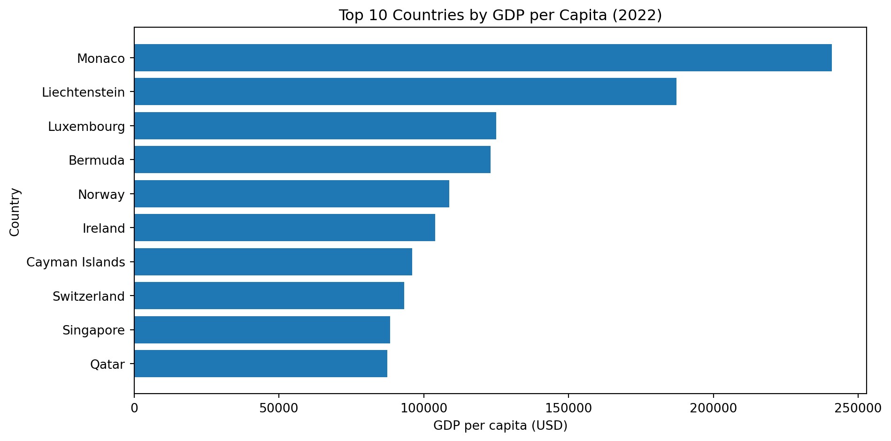
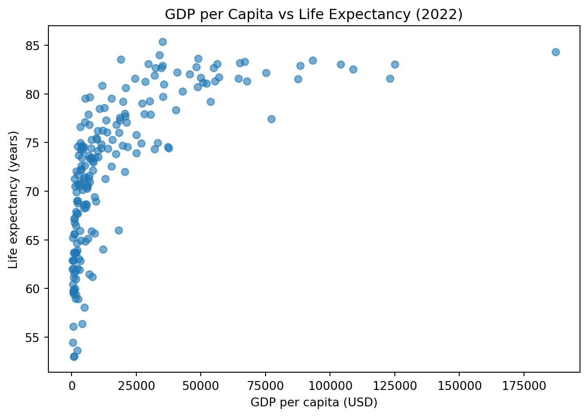

count 169.000000
mean 12.493936
std 19.682433
min -6.687321
25% 5.518129
50% 7.967574
75% 11.665567
max 171.205491
Name: inflation_rate, dtype: float64
The inflation rate is available for 169 countries. The mean inflation rate is approximately 12.49%, while the median is much lower at 7.97%, suggesting the presence of extreme outliers. The maximum value reaches 171.21%, indicating that at least one country experienced extremely high inflation in 2022. The large standard deviation (19.68) further confirms substantial variation across countries. The negative minimum value (-6.69%) suggests that some countries experienced deflation.
Code
df[ind2].describe()
count 203.000000
mean 20345.707649
std 31308.942225
min 259.025031
25% 2570.563284
50% 7587.588173
75% 25982.630050
max 240862.182448
Name: gdp_per_capita, dtype: float64
GDP per capita is available for 203 countries. The mean value is 20,345 USD, while the median is significantly lower at 7,588 USD, indicating a strongly right-skewed distribution. The maximum GDP per capita reaches 240,862 USD, reflecting a few very high-income economies that pull the mean upward. The large standard deviation (31,309) further demonstrates substantial inequality in income levels across countries.
Code
df[ind3].describe()
count 209.000000
mean 72.416519
std 7.713322
min 52.997000
25% 66.782000
50% 73.514634
75% 78.475000
max 85.377000
Name: life_expectancy, dtype: float64
Life expectancy data is available for 209 countries. The mean life expectancy is 72.42 years, and the median is 73.51 years, which are very close, suggesting a relatively symmetric distribution. The range spans from 52.99 years to 85.38 years, indicating meaningful but less extreme variation compared to GDP per capita. The standard deviation (7.71) shows moderate dispersion.

Figure 1: Top 10 Countries by GDP per Capita (2022)

Figure 2: GDP per Capita vs Life Expectancy (2022)
---title: "WDI 2022 Report"author: "Tianyi Zhou"date: todayformat: html: toc: true code-fold: true code-tools: true pdf: toc: trueexecute: echo: true warning: false message: falsebibliography: references.bib---## Test Chunk```{python}import pandas as pddf = pd.read_csv("wdi.csv")df.head()```## Data overview```{python}list(df.columns)```## Indicators selectedIn this report, I focus on three indicators:- Inflation rate (`inflation_rate`)- GDP per capita (`gdp_per_capita`)- Life expectancy (`life_expectancy`)```{python}country_col ="country"ind1 ="inflation_rate"ind2 ="gdp_per_capita"ind3 ="life_expectancy"``````{python}df[ind1].describe()```The inflation rate is available for 169 countries. The mean inflation rate is approximately 12.49%, while the median is much lower at 7.97%, suggesting the presence of extreme outliers. The maximum value reaches 171.21%, indicating that at least one country experienced extremely high inflation in 2022. The large standard deviation (19.68) further confirms substantial variation across countries. The negative minimum value (-6.69%) suggests that some countries experienced deflation.```{python}df[ind2].describe()```GDP per capita is available for 203 countries. The mean value is 20,345 USD, while the median is significantly lower at 7,588 USD, indicating a strongly right-skewed distribution. The maximum GDP per capita reaches 240,862 USD, reflecting a few very high-income economies that pull the mean upward. The large standard deviation (31,309) further demonstrates substantial inequality in income levels across countries.```{python}df[ind3].describe()```Life expectancy data is available for 209 countries. The mean life expectancy is 72.42 years, and the median is 73.51 years, which are very close, suggesting a relatively symmetric distribution. The range spans from 52.99 years to 85.38 years, indicating meaningful but less extreme variation compared to GDP per capita. The standard deviation (7.71) shows moderate dispersion.```{python}#| label: fig-gdp-top10#| fig-cap: "Top 10 Countries by GDP per Capita (2022)"#| echo: falseimport matplotlib.pyplot as plttop10_gdp = ( df[[country_col, ind2]] .dropna() .sort_values(ind2, ascending=False) .head(10))fig, ax = plt.subplots(figsize=(10, 5))ax.barh(top10_gdp[country_col][::-1], top10_gdp[ind2][::-1])ax.set_title("Top 10 Countries by GDP per Capita (2022)")ax.set_xlabel("GDP per capita (USD)")ax.set_ylabel("Country")plt.tight_layout()plt.show()``````{python}#| label: fig-gdp-life#| fig-cap: "GDP per Capita vs Life Expectancy (2022)"#| echo: falsescatter_data = df[[ind2, ind3]].dropna()fig, ax = plt.subplots(figsize=(7, 5))ax.scatter(scatter_data[ind2], scatter_data[ind3], alpha=0.6)ax.set_title("GDP per Capita vs Life Expectancy (2022)")ax.set_xlabel("GDP per capita (USD)")ax.set_ylabel("Life expectancy (years)")plt.tight_layout()plt.show()```## Summary table```{python}import numpy as npdef summarize_indicator(series):return pd.Series({"count": series.count(),"mean": series.mean(),"median": series.median(),"min": series.min(),"max": series.max(),"missing_rate": series.isna().mean() })summary_table = pd.DataFrame({"inflation_rate": summarize_indicator(df[ind1]),"gdp_per_capita": summarize_indicator(df[ind2]),"life_expectancy": summarize_indicator(df[ind3]),}).T# optional: round for readabilitysummary_table = summary_table.round({"mean": 2, "median": 2, "min": 2, "max": 2, "missing_rate": 3})summary_table```::: {#tbl-summary}Table: Key summary statistics for the three selected indicators (2022). Source: World Bank WDI dataset.:::## ResultsAs shown in @fig-gdp-top10, high-income countries such as Monaco and Luxembourg dominate the ranking.The relationship between GDP per capita and life expectancy is illustrated in @fig-gdp-life, showing a strong positive association.Key descriptive statistics are summarised in @tbl-summary.The data used in this analysis are sourced from the World Development Indicators dataset @worldbank_wdi.Indicator definitions and metadata are provided by the World Bank @worldbank_metadata.